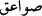

Âyette zikredilen “ra’d”dan murâd, meleğin kendisi değil, sesidir. Ama bir kısım
rivâyetlerde bunun melek olduğunu bildiren ifâdeler vardır. Onlardan birisi şudur:
“Ra’d, bulutları idâre etmekle görevlendirilmiş bir melek olup onları emredilen
yerlere sevkeder. Su, bu meleğin başparmak çukuru içerisinden geçer. Bu melek
Allah’ı tesbih edince gökyüzündeki bütün melekler seslerini yükseltirler ve tam o
anda yağmur yağmaya başlar.”[210]
“Berk”ten maksad, bu meleğin elindeki kılıçlarla bulutlara vurmasıdır. “Kılıçlar”
diye ifâde ettiğimiz “mehârîk” kelimesi “mihrak” kelimesinin çoğuludur. Aslında
çocukların yıkandığı tekne demektir. Burada meleklerin bulutları sevketmek için
kullandıkları âlet mânâsında kullanılmıştır.
Celvetî tarîkatı pîri Bursalı Üftâde Efendi, filozofların ra’d hakkındaki görüşleriyle
Hz. Peygamber (s.a.) Efendimizin ra’d ile ilgili: “Ra’d; arı şeklindeki meleğin
çıkardığı sestir.”[211] ifâdesi arasını şu şekilde te’lîf etmektedir: “Melek, bu âlemin
dışından seslenir, fakat ses içeri girer ve orada tesirini gösterir. Biz de içeriden o sesi
duyarız. Bunu şu örnekle ifâde edebiliriz: Bir kimse, midede şişkinlik yapacak bir şey
yese, o kimsenin içinde ses çıkarabilecek bir gaz hâsıl olur. Bu gazın kaynaklandığı
sebeb hâricî olsa bile, ortaya çıktığı yer adamın içidir. Bunun gibi, Peygamberimiz
(s.a.)’in ifâdesi ra’d’in başlangıcına, bilginlerin sözü ise onun meydana gelişine ışık
tutmaktadır.”
Münâfıkların durumunu açıklayan bir misâl de şudur: Bir gurup insan vardır. Bunlar,
gökten sağnak hâlinde boşanan, içinde son derece yoğun karanlıklar, gürültü ve
yıldırımlar bulunan bir yağmura tutulmuşlar ve yıldırımlardan gelecek ölüm korkusuyla
parmaklarını kulaklarına tıkamışlardır.
“Parmakları kulaklara tıkama” ifâdesinde bir nevi mübâlağa vardır. Mu’tâd olan
parmak uçlarının kulakların içine konmasıdır. Sanki onlar korku ve şaşkınlıklarından
sadece parmaklarının uçlarını değil, tamamını kulaklarına tıkamışlardır. Bu, onların
şaşkınlık ve korkularının ne kadar büyük olduğuna ve hatta âzâlarını dahi normal bir
tarzda kullanamayacak kadar dengelerini kaybettiklerine işâret etmektedir. Bazılarına
göre parmakları kulaklara koymak; onların aşırı dehşet ve hayretlerine işârettir.
Bazılarına göre, Araplar şiddetli ses ânında kulağa konan parmağa “sebbâbe” yâni
sövme parmağı derler. Kur’ân-ı Kerîm, üslûbuyla edeb gözeterek bu kelimeyi
kullanmamış, bir başka parmak adı da belirtmemiştir. Nitekim bizzat Araplar işâret
parmağına “sebbâbe” sövme parmağı demeyi hoş karşılamadıklarından “misbâha ve
mihlele” gibi kinâyeli adlar vermişlerdir. Bu gibi kinâyeler, Kur’ân-ı Kerîm’de
zikredilmemiştir. Çünkü bunlar, o devir insanlarının tanımadığı sonradan çıkmış
lâfızlardır.
“Savâik” (  ); sâikânın çoğulu olup yıldırımın korkunç sesi demektir. Bu sesle
beraber gökten bir ateş parçası iner. Bu ateş parçası, üzerine geldiği şeye çarpar. Fakat
letâfeti sebebiyle kısa zamanda sâkinleşip söner. Anlatıldığına göre, bir hurma ağacı
üzerine yıldırım düşmüş, onun sadece yarısına yakın kısmını yakarak sönmüştü.